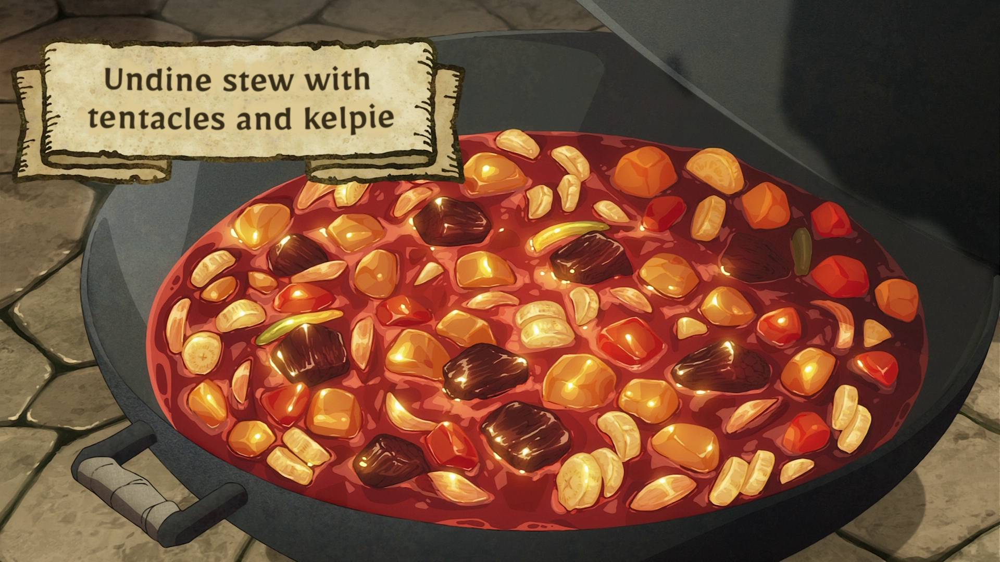

A magically energy-filled perfect to replenish one's magic in a more palatable way. Potatoes, carrots, onios, tentacles
and season kelpie shank are cut into bite-sized pieces and stir-fried, then stewed together in an Undine. This recipe serves 8.
Ingredients:
- Undine (2L)
- Shank of 1 Kelpie (1)
- Tentacles (about 1 meter)
- Onion (2)
- Carrot (2)
- Brown sauce (to taste)
- Salt and pepper (to taste)
How to cook:
- Peel the potatoes, carrots, onions and the tentacles.
- Cut them into bit-sized pieces.
- Marinate the kelpie meat with salt and pepper, and fry until the surface changes color
- Add the onions and carrots and sauté them together then put them into the Undine.
- Skim well, then add the potatoes and spices and simmer.